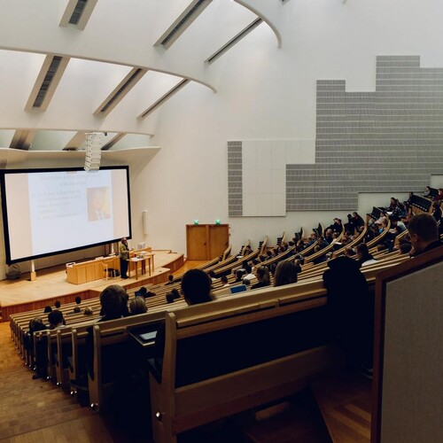

The Experimental Class

The Experimental Class
I was in a news class,
one of the kids fell asleep.
The teacher,
gave him what he called a "wet willy", for which he should have been terminated.
I was supposed to give a speech soon,
I didn't know enough English yet, I was learning at my own pace.
I walked out of the classroom,
the teacher was crazy, so I walked out.
The soon to be principal,
currently involved in creating a class of failures was looking for a control sample.
He asked me what class I am in,
why am I in the hall.
I lied,
"Great!" - he said, "Follow Me".
He told me not to worry about the paper work,
this is my new class.
There was a poster on the wall that said:
"Wherever you go there you are".
We were asked to never say that we feel fine,
because fine didn't explain how we felt.
And we were supposed to explain to the group what we were feeling for real,
it was a nice gesture, everyone turned out to be fighting against he currents.
Bad parents, poverty, bullies,
or in my case crazy teachers.
I dropped out from that High School before the class was over,
I lost credits from several classes.
Everyone in that class wished me well, I think they asked me to stay strong, and wished me luck on my journey;
they saw my dropping out as the beginning of a journey.
They are all extraordinary people,
leaders, forces of nature, unbreakable, un-extinguishable, infinitely powerful.
They were some of the most self-aware students in that entire school,
and they were not rejects, they were just rejecting in-authenticity.
The soon to become principal was quiet,
his control sample was dropping out.
But it wouldn't take much for him to figure out that the school was crushing us,
and there was only one way out of that.
I suspect investigations followed, into the creepy teachers I named,
though probably no one got fired.
I have a vague memory, of AdultEd principal reaching out,
I don't remember if it was because I called for a GED, or she found me walking the road, or called me.
I was treated with great kindness,
and told not to worry about a thing, I think the experimental class teachers told her about me, somehow.
I graduated six months early with extra credits,
I went on to college, I ended up on the Deans list, or as I call it the 4.0 GPA Student Retention List.
And dropped out, but this time because I took all their good classes which were few,
I went to work as a programmer - the college didn't have any of those classes - and anyway I learn best, when I study at my own pace and in my own sequence.
He thought they were all rejects,
he built a class with all the difficult students.
But they turned out to be some of the wisest and most brilliant and insightful minds in the entire school,
we must not allow anybody to rob us of our predispositions.
We must stand up for real education,
we must not allow anybody to trick us into thinking that temporary memorization is in some magical way an education.
Lastly, the principals know that schools are not teaching[1].
The Experimental Class References
[1]: https://www.youtube.com/watch?v=fmoor8DwqW4